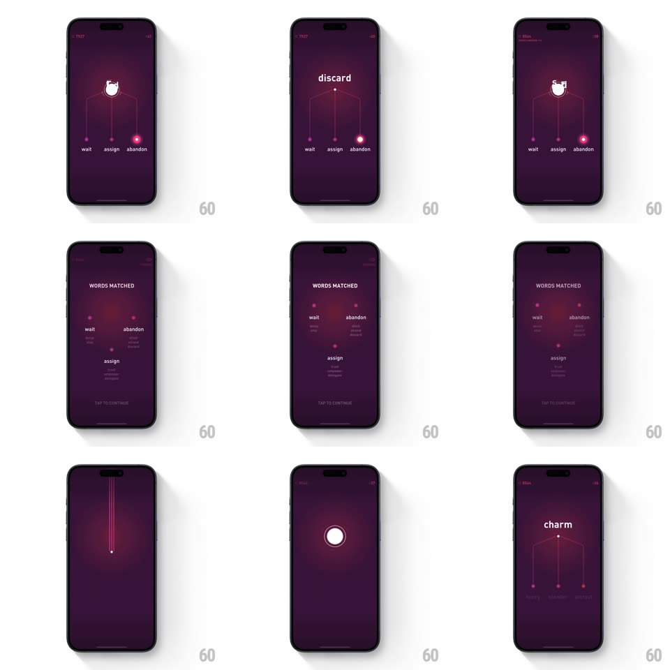

Media
Frame-by-frame

Rebuild this interaction 1:1: Elevate's pull-string word game - a word hangs at top ("strand") with three elastic strings down to answer choices ("wait / assign / abandon"); drag a string's glowing endpoint down and release to snap the choice up to the word.

Rebuild this interaction 1:1: Elevate's pull-string word game - a word hangs at top ("strand") with three elastic strings down to answer choices ("wait / assign / abandon"); drag a string's glowing endpoint down and release to snap the choice up to the word.
## Integration
Integration: stack-agnostic spec - springs given as stiffness/damping, timed motions as duration + curve; map every value to your framework and animation library of choice.
## Scene
Deep purple screen: a top node holding the prompt word, three thin strings fanning down to small glowing pink endpoints, each labeled with a choice word beneath; faint timer/score at the top corners.
## Motion spec
Pattern: elastic pull-string selection.
- Touch an endpoint: it grabs (glow brightens, dot scales 1 -> 1.3) and the string stretches with the drag - the line stays taut between the top node and your finger, sagging slightly with elasticity.
- Drag far enough (~120px): the string glows along its length; release and the endpoint snaps up to the top node (spring ~280/18, overshooting then settling) as the choice word flies with it.
- On a correct match: the WORDS MATCHED review slides in - matched words stack with their distractors listed beneath in small gray text; "TAP TO CONTINUE" pulses gently at the bottom.
- Between rounds: the old strings collapse upward into the node (lines retract, 300ms) and new strings drop down with a soft whip (spring ~300/22), endpoints igniting one by one (stagger 80ms).
- Wrong pull: the string snaps back down with a wobble (spring ~400/14) and the endpoint flashes red.
## Calibration
- Strings are physics lines - they bend, never teleport; the top node is the fixed anchor for all three.
- Endpoints glow magenta at rest, white while grabbed.
## Reduced motion
Strings draw straight; endpoints snap without elastic overshoot.
## Don't miss
- The fan arrangement: strings spread from one node like a claw machine rig.
- The matched-words review keeps the distractor words visible under each match - it is a teaching moment, not just a score.